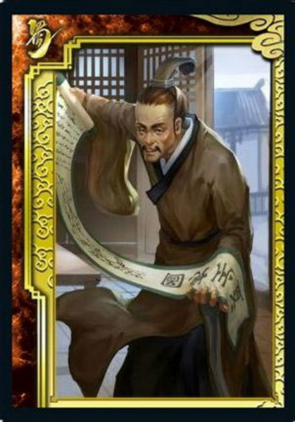
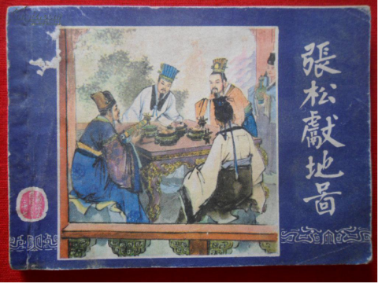

《三国演义》中张松的自白:我虽然丑可我有才呀，为什么不招人待见
《三国演义》当中英雄豪杰大批，各种人才也是多如牛毛。但我们发现只要是古代的人才，多少都有点奇奇怪怪的性格。好像总要有一方面不同于常人。就像诸葛亮，一两次到他家里去请不到他的，非得三遍站到门口恭恭敬敬的以示自己的诚意，这样有才的人才会出来相见帮你平定天下，但诸葛亮是长得丰神俊朗，用我们现代的话来说就是帅气逼人让人一看就觉得此人不凡。有才华的人千奇百怪，我们要说的这位张松也是一位很有才华的人，不过这人长得并不怎么样，这还是客气的说了，实话说就是很丑很丑，不但很丑这男孩一点也不温柔，也许因为自己智慧过人吧，他的脾气有点怪怪的，一上来就喜欢怒怼别人。说起话来也是毫不客气，感觉下巴都要昂到天上去了。

这位老兄在刘备的事业上大大的助推了一把。当然，这里面曹操的的助力也是不少的，本来说曹操是一个非常爱惜有才的人的，曹操自己的部下也是人才一大把，这么多有才能的人给曹操许多良策，也在方方面面给了曹操帮助，正因为这样，曹操才能一路上势如破竹，势力逐渐的壮大。但曹操这个人虽然有治国之才，但其实也是有点小脾气的，每次打完胜仗以后，感觉曹操的心里总是有按捺不住的小激动。这样一骄傲起来，很快又要迎来一场败仗。骄傲只是他一个小小的缺点，曹操的另外一个缺点是多疑，诸葛亮正是摸清楚了曹操这种脾气，才能大摇大摆的坐在船上，一阵东风就借了曹操的3000多支羽箭。
曹操和张松的故事是发生在曹操觉得自己大势已定，只要往南下去把荆州攻打下来就要统一天下的时候。这时候的张松只是益州刘璋手底下的一个人物，刘璋怕曹操马上就要攻打他便派出我们说的这位很丑很有才的张松前去当说客。曹操这时候正好刚刚打了好几场胜仗，内心的小满意核对自我的崇拜正好达到了一个小高度。咱们都知道曹操是很骄傲的，一般这时候都不怎么爱理别人的意见和建议。张松这时候正好撞了上来。曹操一见这人，长得矮不说，还长的这么丑。观看外表就已经没有把他划为人才那一类。而且这张松也是胸中有点墨水，对人更是有点小脾气的。对着曹操那是一脸的小傲娇，洋洋得意的阐述自己的见解。是不是还要卖弄一番自己的小才华。

曹操一向是很爱护人才的，不过自己刚刚打了胜仗，胜局马上就要出来了，南边的人们听了这风声，差不多都要跪下开城门给自己让路了。那还听得这张松一张嘴罗里吧嗦，况且还是一个长得丑又没礼貌的家伙。曹操登时那是心里冒出愤怒的小火花，吩咐手下将这个骄傲的丑逼一顿乱棍给打了出去！张松本来就因为自己有才心中颇为骄傲，这曹操不礼贤自己还就算了，居然还敢吩咐手下乱棍把自己给打了出去。真心是把张松气的丑脸都扭成了一团，发誓定要报了这个让他丢脸的大仇。
诸葛亮可是早就听过这个张松的名字，闲言碎语间也知道了张松有些才能，正好这时候张松从曹操哪里受了一顿气。诸葛亮赶紧通知自己的老大刘备要把这张松纳入自己的人才后宫。刘备一听，赶紧安排上，一顿操作就把这张松受了的气安抚的甚好。张松感受到了自己应该受到的礼遇，登时感动的稀里哗啦，赶紧就献上了自己的花费诸多心血绘制的地图。这张地图让刘备的后期打西川得心应手。不过这张松的下场也是不咋的，估计都是自己作的吧，他本来是刘璋的手下，却没有忠心为主。为了报自己的私仇就劝刘璋和刘备搞好关系，这也就算了，后来他再次帮助刘备，被人告密，便被刘璋斩杀了。
小编认为张松之所以不受曹操待见，是张松并没有摸清楚曹操的脾性。倘若他知道此时的曹操志得意满，听不进别人言语，特别是曹操本来就是自己就是一个很狂的人，张松却要和他比狂。曹操当然不会给他什么好果子吃了。不过，张松性格本来就是这样，你要他谄媚起来，他还真要说一句：老子做不到！历史总是在不经意间就会被一些小小的细节改变，也许曹操也不会知道自己就在那一刻间丢了本属于自己的天下吧！